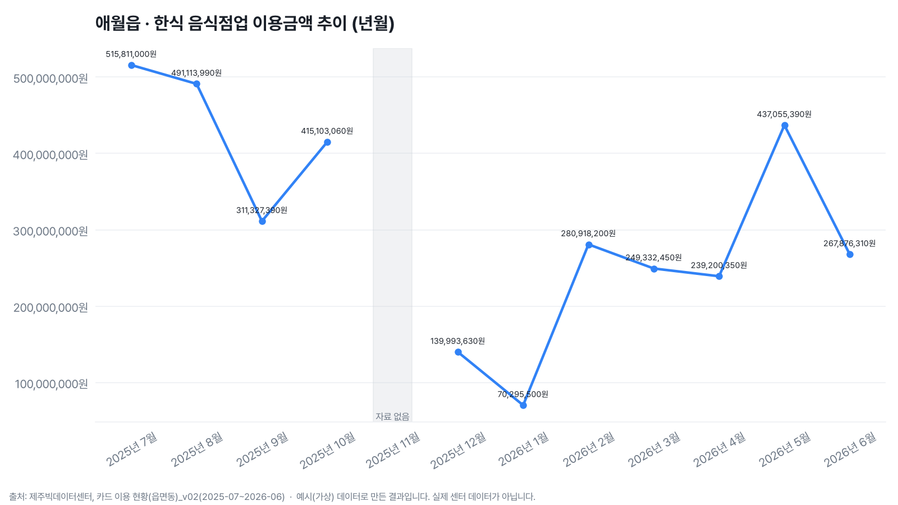
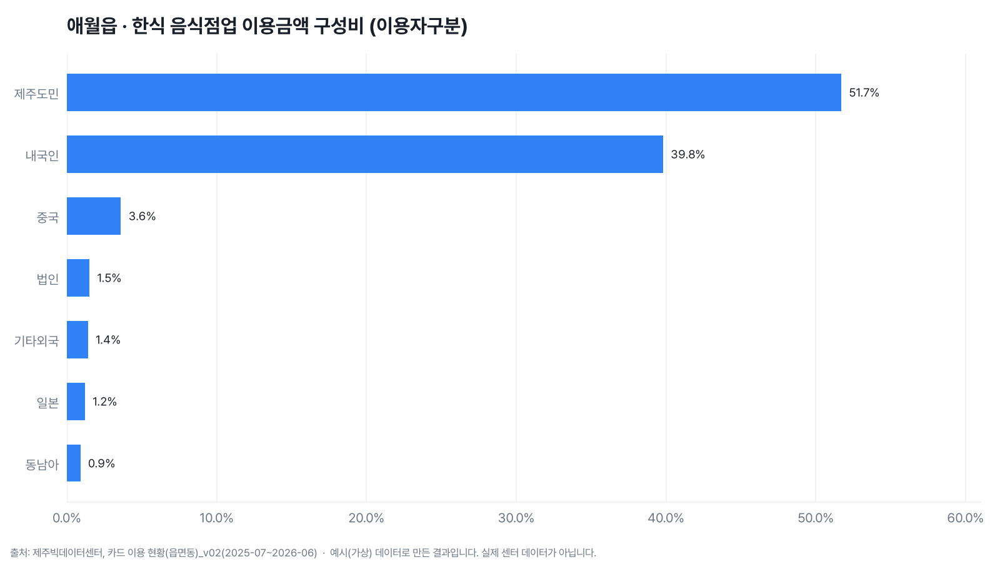
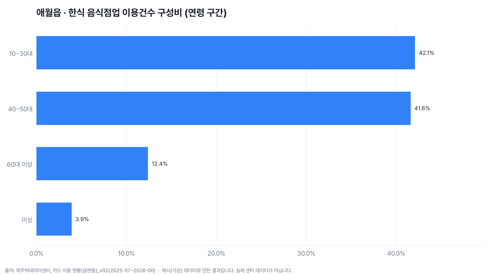
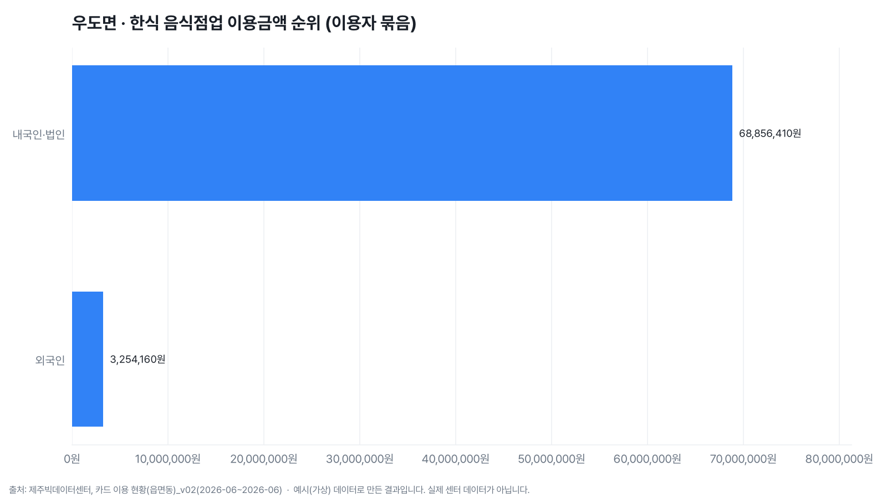
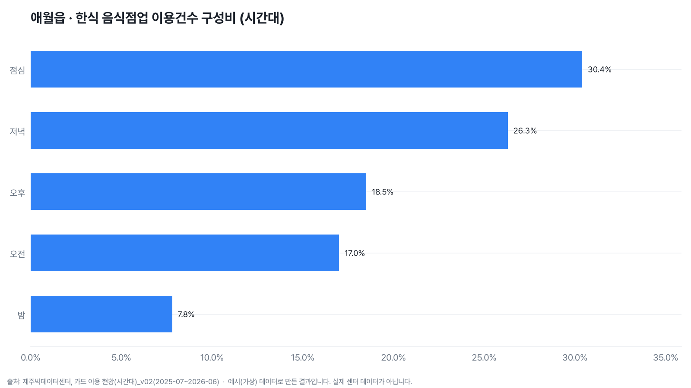
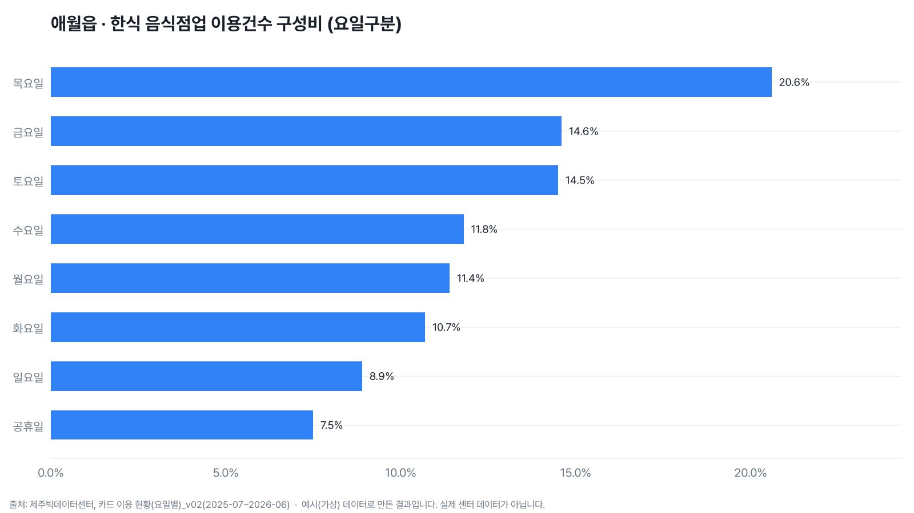
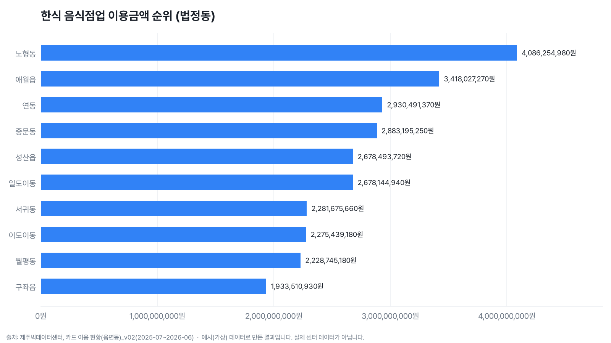

작성일 2026-11-16 · 혼디(제주빅데이터센터 분석 Agent)
이 보고서는 예시(가상) 데이터로 만든 것으로 실제 센터 데이터가 아닙니다.
2025년 7월보다 2026년 6월에 이용금액이 48% 줄었어요.

| 년월 | 이용금액 |
|---|---|
| 202507 | 515,811,000원 |
| 202508 | 491,113,990원 |
| 202509 | 311,327,390원 |
| 202510 | 415,103,060원 |
| 202512 | 139,993,630원 |
| 202601 | 70,295,500원 |
| 202602 | 280,918,200원 |
| 202603 | 249,332,450원 |
| 202604 | 239,200,350원 |
| 202605 | 437,055,390원 |
| 202606 | 267,876,310원 |
※ 예시(가상) 데이터로 만든 결과입니다. 실제 센터 데이터가 아닙니다.
※ 비씨카드 결제 기준으로, 전체 소비가 아닌 표본입니다.
가장 큰 몫은 '제주도민'이에요. 이용금액의 51.7%를 차지해요.

| 이용자구분 | 이용금액 비중(%) |
|---|---|
| 제주도민 | 51.7% |
| 내국인 | 39.8% |
| 중국 | 3.6% |
| 법인 | 1.5% |
| 기타외국 | 1.4% |
| 일본 | 1.2% |
| 동남아 | 0.9% |
※ 예시(가상) 데이터로 만든 결과입니다. 실제 센터 데이터가 아닙니다.
※ 비씨카드 결제 기준으로, 전체 소비가 아닌 표본입니다.
가장 많은 건 '10~30대'예요. 10건 중 4건꼴이에요 (42.1%).

| 연령 구간 | 이용건수 비중(%) |
|---|---|
| 10~30대 | 42.1% |
| 40~50대 | 41.6% |
| 60대 이상 | 12.4% |
| 미상 | 3.9% |
※ 예시(가상) 데이터로 만든 결과입니다. 실제 센터 데이터가 아닙니다.
※ 비씨카드 결제 기준으로, 전체 소비가 아닌 표본입니다.
이용금액 1위는 '내국인·법인'이에요. 2위 '외국인'보다 21.2배 많아요.

| 이용자 묶음 | 순위 | 이용금액 |
|---|---|---|
| 내국인·법인 | 1 | 68,856,410원 |
| 외국인 | 2 | 3,254,160원 |
※ 예시(가상) 데이터로 만든 결과입니다. 실제 센터 데이터가 아닙니다.
※ 비씨카드 결제 기준으로, 전체 소비가 아닌 표본입니다.
가장 많은 건 '점심'이에요. 10건 중 3건꼴이에요 (30.4%).

| 시간대 | 이용건수 비중(%) |
|---|---|
| 점심 | 30.4% |
| 저녁 | 26.3% |
| 오후 | 18.5% |
| 오전 | 17.0% |
| 밤 | 7.8% |
※ 예시(가상) 데이터로 만든 결과입니다. 실제 센터 데이터가 아닙니다.
※ 비씨카드 결제 기준으로, 전체 소비가 아닌 표본입니다.
가장 많은 건 '목요일'이에요. 10건 중 2건꼴이에요 (20.6%).

| 요일구분 | 이용건수 비중(%) |
|---|---|
| 목요일 | 20.6% |
| 금요일 | 14.6% |
| 토요일 | 14.5% |
| 수요일 | 11.8% |
| 월요일 | 11.4% |
| 화요일 | 10.7% |
| 일요일 | 8.9% |
| 공휴일 | 7.5% |
※ 예시(가상) 데이터로 만든 결과입니다. 실제 센터 데이터가 아닙니다.
※ 비씨카드 결제 기준으로, 전체 소비가 아닌 표본입니다.
※ 공휴일은 원래 요일에도 함께 집계되어 요일 합계가 실제보다 클 수 있습니다.
이용금액 1위는 '노형동'이에요. 2위 '애월읍'보다 1.2배 많아요.

| 법정동 | 순위 | 이용금액 |
|---|---|---|
| 노형동 | 1 | 4,086,254,980원 |
| 애월읍 | 2 | 3,418,027,270원 |
| 연동 | 3 | 2,930,491,370원 |
| 중문동 | 4 | 2,883,195,250원 |
| 성산읍 | 5 | 2,678,493,720원 |
| 일도이동 | 6 | 2,678,144,940원 |
| 서귀동 | 7 | 2,281,675,660원 |
| 이도이동 | 8 | 2,275,439,180원 |
| 월평동 | 9 | 2,228,745,180원 |
| 구좌읍 | 10 | 1,933,510,930원 |
※ 예시(가상) 데이터로 만든 결과입니다. 실제 센터 데이터가 아닙니다.
※ 비씨카드 결제 기준으로, 전체 소비가 아닌 표본입니다.
10 미만 수치는 반출 기준에 따라 가리거나 묶었습니다. 최종 반출 여부는 센터 심사로 결정됩니다.